Clea Joy Ramos - E&D I - April - May 2021
The Candy Land project was a group effort in which I worked with my classmates to create an interactive gingerbread display by combining electronic components with physical structures and models. Each member of my group was assigned a certain role and had specific responsibilities so that we could complete different components of our project. My role was the Designer ; I was responsible for the layout of our design and for creating the Illustrator files for the cardboard prototypes and the gingerbread components. Even though we were assigned our own roles and responsibilities, we often helped each other and took on new roles. For instance, I also worked on coding and assembling electrical components in addition to my responsibility of the cardboard and gingerbread prototypes.
My other group members included:When first starting this project, we brainstormed ideas and themes for our gingerbread display. We decided on a train theme and our display would be centered around a train that would move back and forth. I also brainstormed other interactive aspects such as a moving crane and a railroad crossing arm. We settled on the railroad crossing sign as our second interactive element. As we started to develop more ideas, we added more components to our display. Ultimately, we included 3 electronic components: a moving train cars, a railroad crossing sign, and a row of houses with lights.
| 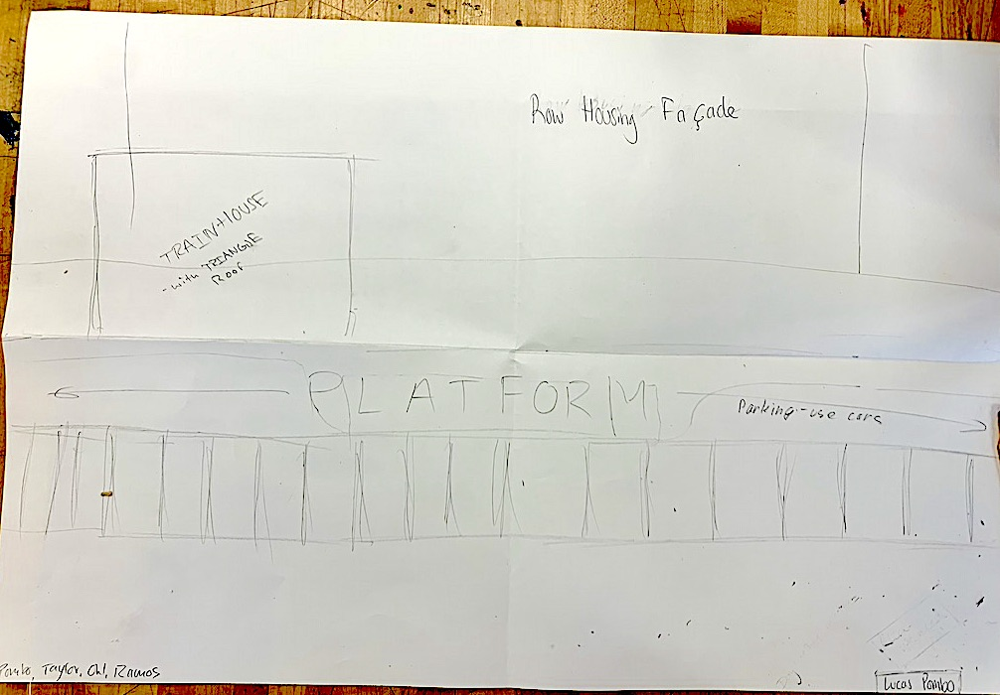 | 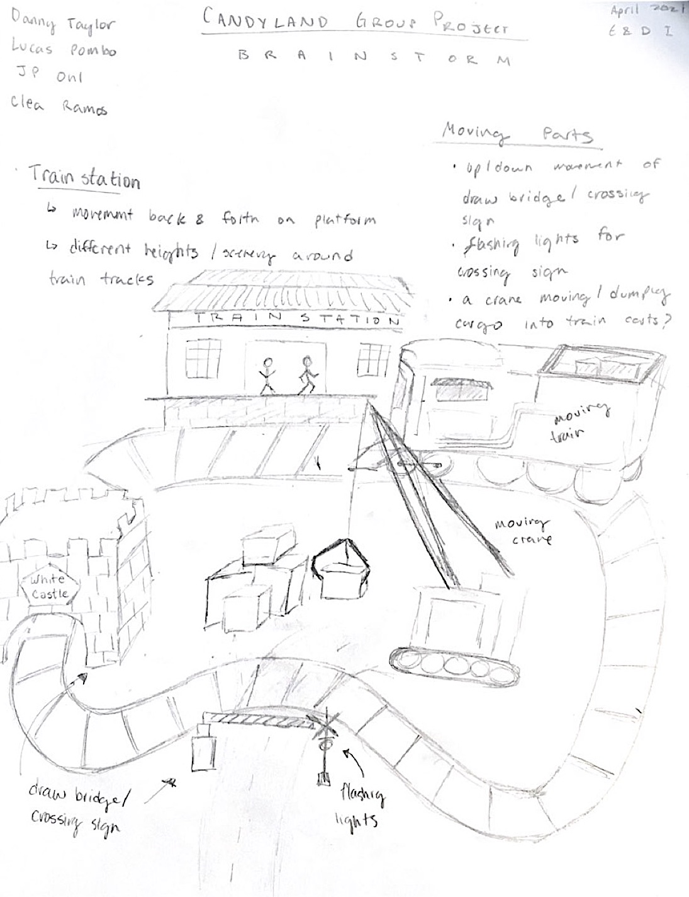 |
| Initial layout of display | Additional ideas for display |
|---|
 |
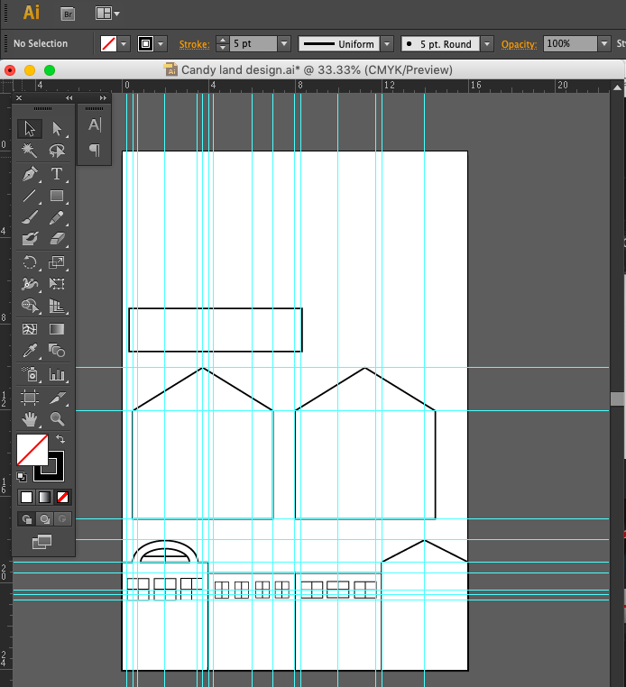 | 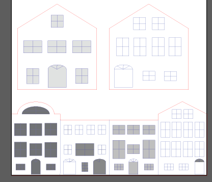 |
| Sketch of prototype with measurements | Creating cardboard prototype with guidelines | Cardboard prototype version 1 with raster elements |
|---|
After the cardboard prototype was cut, we began assembling the row houses. After seeing how the cut-out windows looked, I had the idea to cut out multiple windows so that our row houses would look more interesting. After confirming the new idea with my group, JP cut out some more windows from the front cardboard panel. Then, we attached the front panel of the to the sides. We then sketched and labeled the rest of the components on the cardboard base relative to the row houses.
| 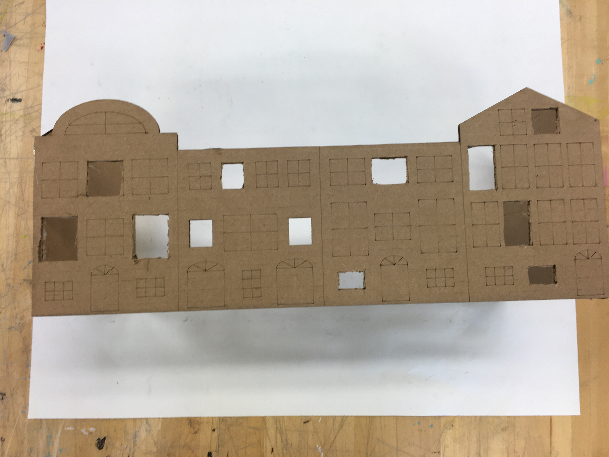 |  |
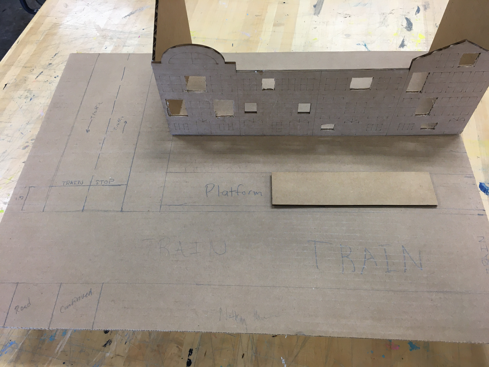 |
| Cardboard front panel of row houses | Cardboard side panel of row houses | Assembled cardboard row houses on labled cardboard platform |
|---|
For the next iteration and final Illustrator file, I cut out more windows on both the front and side pannels(shown in red). I also etched and cut small gingerbread people and trees for decoration. Once the gingerbread pieces were cut, JP glued pieces of opaque plastic behind the windows to create window panes.
| 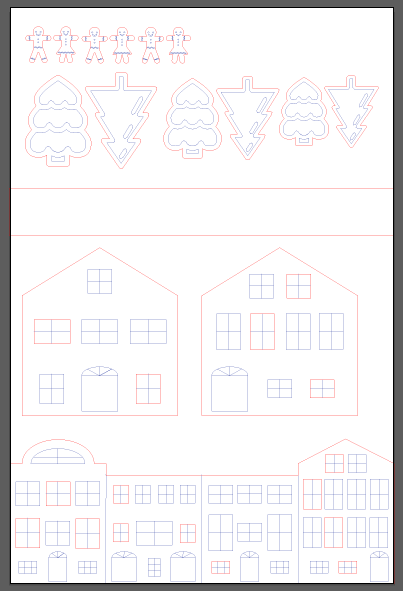 |  |
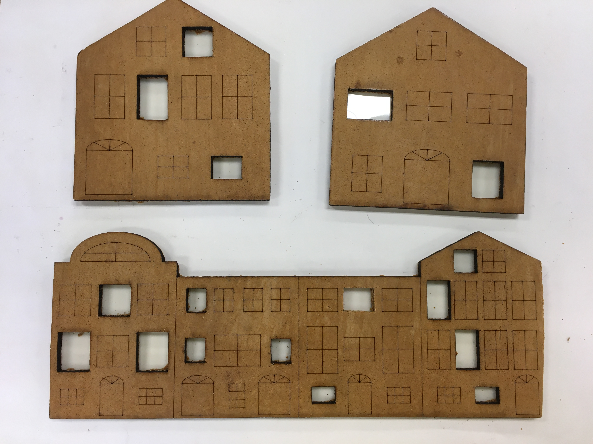 |
| Final Illustrator file to cut on Gingerbread | Cut Gingerbread pieces | Row Houses pieces with opaque plastic windows |
|---|
After seeing the gingerbread houses with windows, I thought it would be cool to add lights behind the windows. Since I had completed my role of designer by finishing the cardboard prototype and gingerbread cut out, I decided to take on this new responsibility of making the row houses light up. After conferring with my team, they approved my idea and we all decided to use rainbow gumdrop LEDs behind the windows. These LEDs flicker and change colors between red, green, and blue.
I began this new responsibility by first coding the Micro:bit. Since I did not have a full LED circuit to test my code, I just attached a singular led to the Micro:bit at pin 14 (P14), and I attached a button to pin 1 (P1). When the button was touched, P1 would read as "1", meaning "on", and P14 would turn on for 15 seconds. In the code, 15 seconds on is represented by P14 being set to "1" (meaning "on") and pausing for 5 seconds within a loop that runs 3 times, resulting in the light being on for 15 seconds. Then, the light will turn off when P14 is set to "0".
After coding the Micro:bit, I drew the circuit integration and assembled the LED circuit. The circuit consists of 4 rainbow gumdrop LEDs positioned in a parallel configuration. While soldering the LEDs into the circuit, I continuously checked the connection of my circuit to make sure my circuit was functioning properly.
| 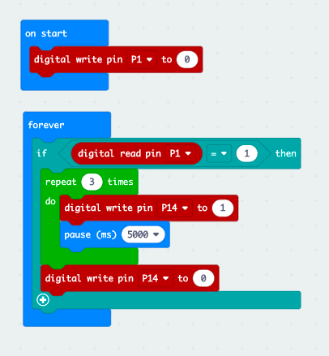 | 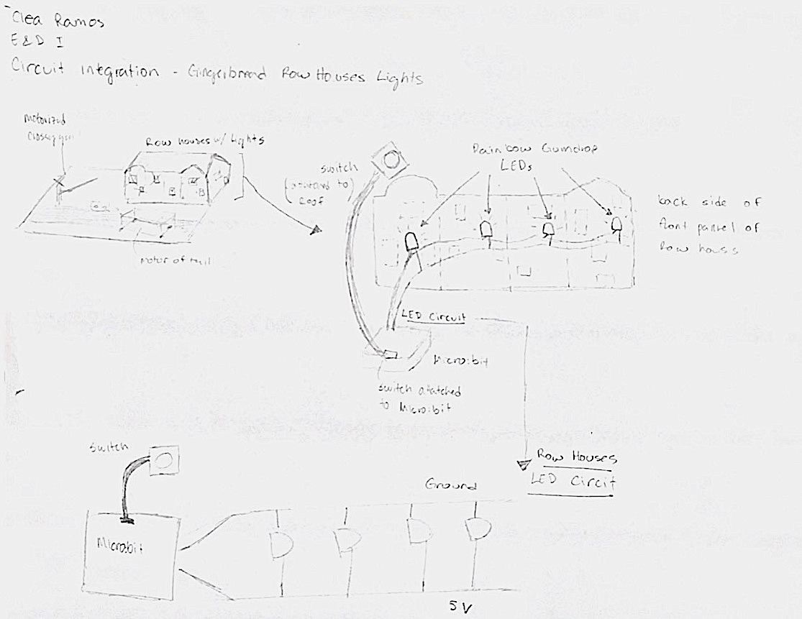 | |
| Code for Button and Light Circuit | Circuit Drawing and Integration | Video of Button and Light Circuit |
|---|
Once the electric components were fully assembled and coded, we began decorating our display. We started by inserting the electronic components of the railroad crossing arm into the cardboard base. Then, we assembled and attached the gingerbread row houses to the base of the display with frosting and hot glue. We added a cardboard roof and a removable backing to the house so that I was able to position the LED circuit and its Micro:bit inside the house. I cut a hole in the roof for the button to sit. The Micro:bit that controlled the railroad crossing arm was also hidden within the row houses.
Then, we decorated the row houses with frosting and candy. We decorated the base of the display with construction paper to represent grass, a road, and a railroad. We included our decorated gingerbread trees and gingerbread people.
| 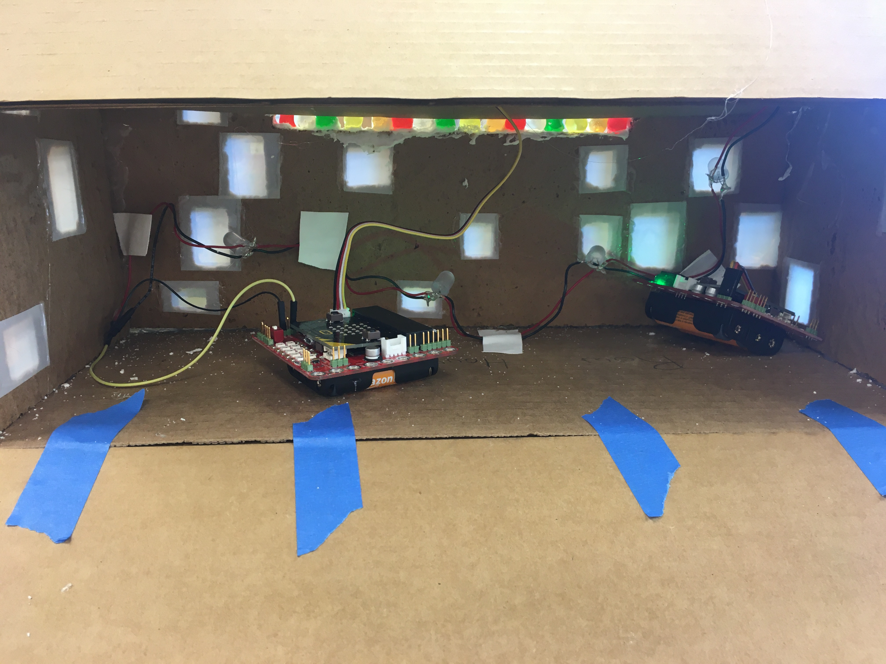 | 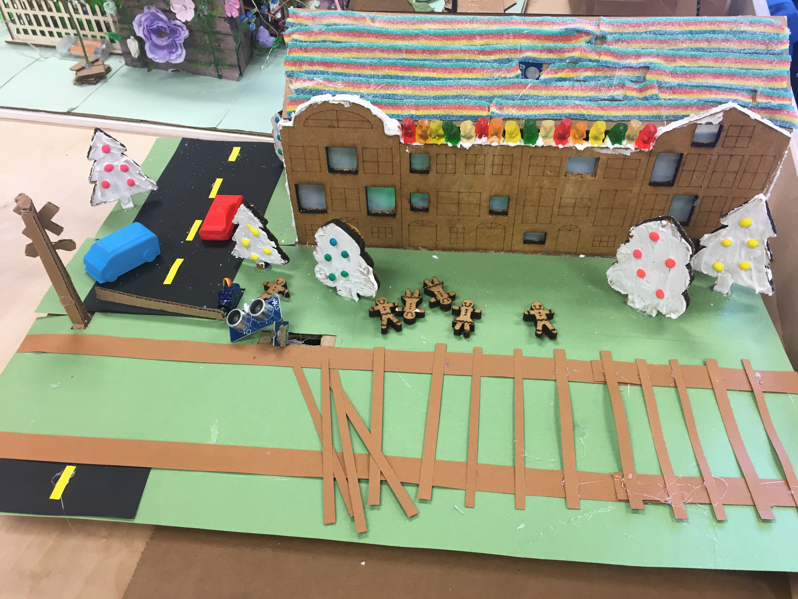 |
| LED Circuits inside row houses | Decorating the display |
|---|
Our group had some challenges regarding communication between group members. When we started this project, not everyone was present at every E&D class, so it was difficult to establish everyone's roles and responsibilities for each class. So, at times we worked on different aspects of our display outside of our role. For instance, as the designer, I was responsible for the Illustrator files for the gingerbread row houses. But after I completed my responsibility, I realized that the row houses had much more potential, and I began coding and assembling an LED circuit for the row houses. So, our group ended up focusing on different structures of our display rather than each member focusing on their own role. While I focused on the row houses, Lucas was responsible for the construction and code for the train, and Danny and JP focused on the railroad crossing, building structures, and decoration. This way, our group was much more efficient in completing tasks and assembling our display.
| 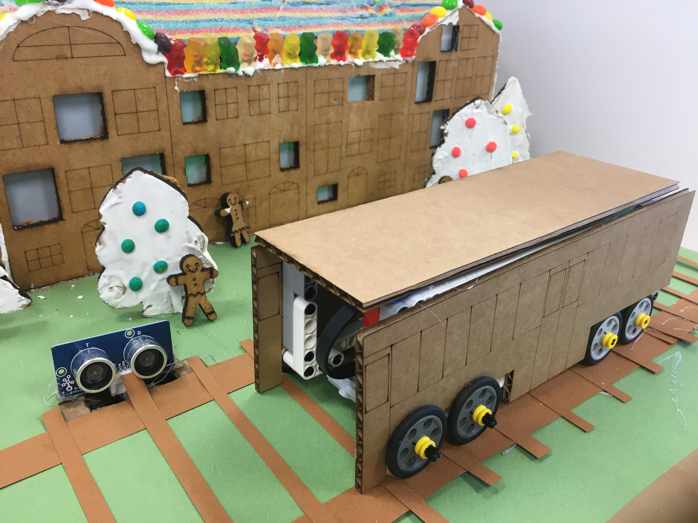 | 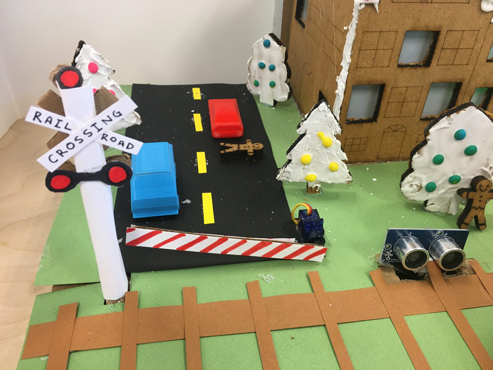 |
| Close up of train and row houses | Close up of railroad crossing arm |
|---|
| 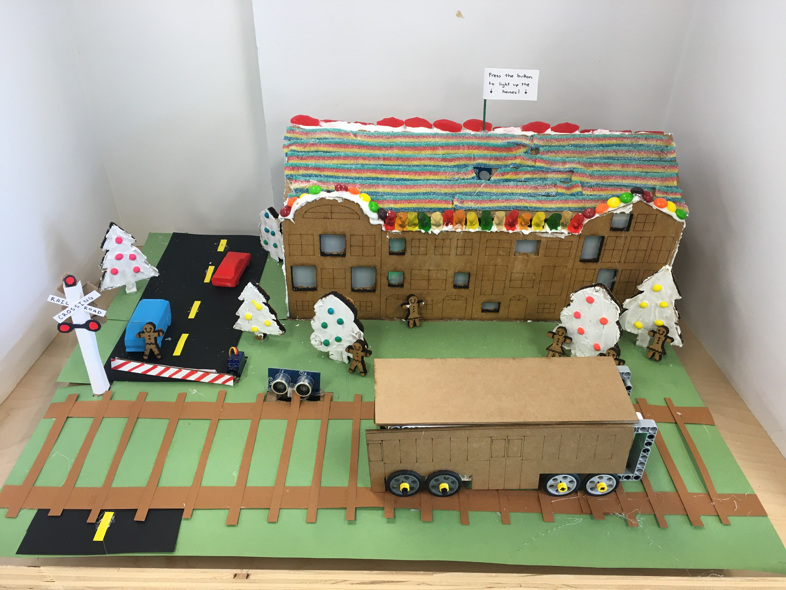 | |
| Final gingerbread display | Video of interactive lights |
|---|